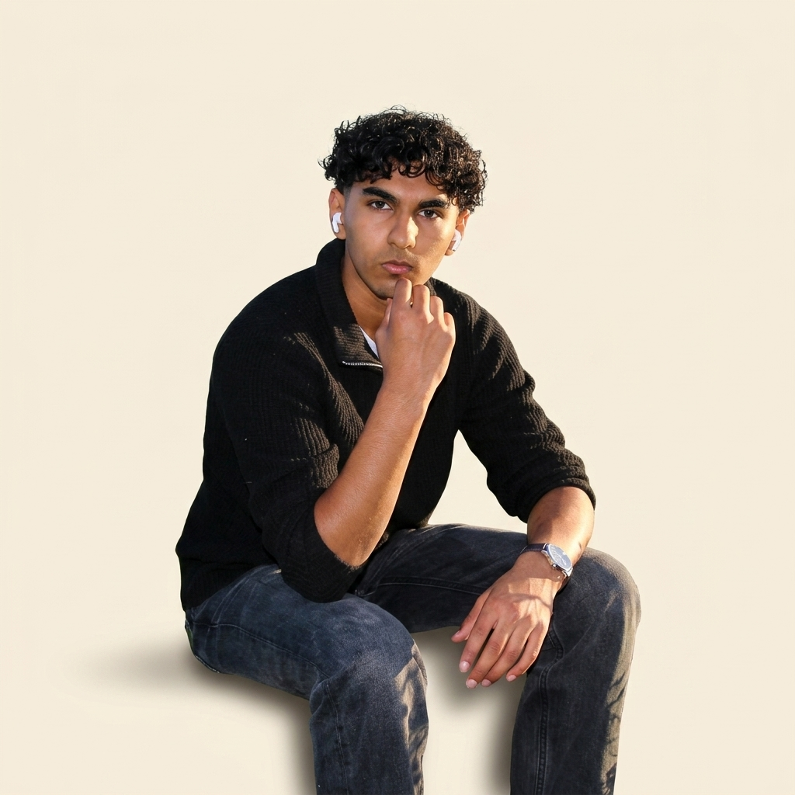
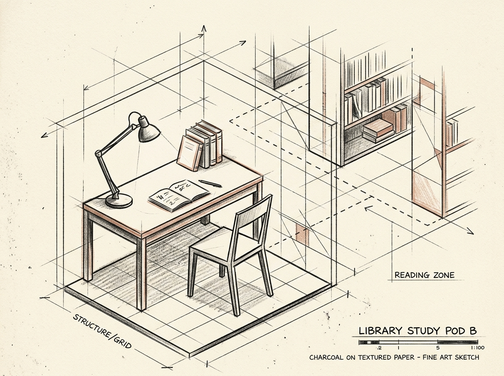

About
Sukrit Komalla

The Intersection of Form and Logic
I am a multidisciplinary creator, analyst, and writer working at the boundaries of systems thinking and artistic expression. My work spans from constructing minimalist physical objects to programming algorithmic trend indicators and publishing free-verse poetry.
With a background that bridges analytical rigor and literary theory, I strive for structural clarity in everything I build. Whether designing a piece of furniture, debugging a database query, or structuring a metaphor, the objective remains the same: reducing complexity to its most honest and functional essence.
Core Principles
-
Material HonestyLetting raw timber, metal patinas, and logical structures show their native character without concealment.
-
Systemic OrderDesigning scalable, predictable networks of relationships, both in software architecture and visual design.
-
Structural SolitudeFinding depth in quiet spaces, minimal palettes, and isolated motifs that call for slow, deliberate focus.
-
Metaphorical ClarityUsing precise language and imagery to make abstract concepts instantly resonant and legible.
Creative Journey
Minimalist Furniture & Objects
Launched a series of functional interior pieces combining oil-finished solid oak wood and welded black steel frame joinery. Featured in modern design journals for structural simplicity.
Algorithmic Interest Trend Analysis
Published a series of mathematical research models evaluating systemic interest rate shocks and interest-dependent valuations within seed-stage technology ecosystems.
"Silence of the Sea" Chapbook
Released an anthology of free-verse poems examining the physical patterns of shifting coastal sands and metaphors of geographical isolation in modern society.
Decoding Mid-Century Symbolism
Defended research examining hidden structural rules, recurring motifs, and lexical syntax within post-war European expressionist poetry.
